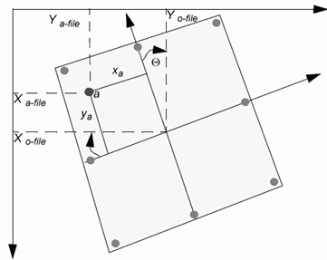
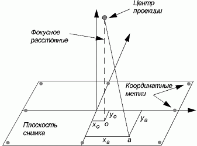
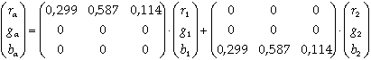
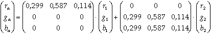
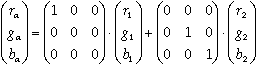
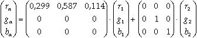
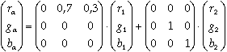

Определяет внутреннюю геометрию камеры или сенсора в
момент съемки. Процесс внутреннего ориентирования заключается в нахождении
элементов, определяющих положение снимка. Внутреннее ориентирование главным
образом используется для преобразования файловой или других систем координат
снимка в систему пространственных координат снимка.
Рисунок ниже показывает элементы, определяющие
положение снимка внутри камеры, где о это главная точка, и а является
точкой на изображении.
 
Внутренняя геометрия камеры определяется следующими
элементами:
· главной точкой
· фокусным расстоянием
· координатными метками
· дисторсией объектив
Формирование стереоизображения
Для формирования стереоизображения в основном
используются 3 способа: анаглифический, поляризационный и затворный.
1. Первый способ состоит в том, что сама
"картинка" несет в себе информацию, для какого глаза она
предназначена. Левая и правая "картинки" различаются окраской.
Например, левая – преимущественно красная, правая – преимущественно синяя. Это,
так называемый, анаглифический метод сепарации. Соответственно, в очках
используются цветные фильтры соответствующих цветов. У анаглифического метода
имеются принципиальные проблемы с цветопередачей (вернее, с ее отсутствием), да
к тому же из-за неидеальности цветных фильтров и изменением со временем цвета
пленки сепарация, а следовательно и качество стереоизображения, оставляет
желать лучшего.В настоящее время этот способ получения низкокачественного
стереоизображения не используется в коммерческих 4D кинотеатрах.
2. Второй способ заключается в поляризации
(вертикальной, горизонтальной или круговой) светового потока – поляризационный
метод. Для разделения изображения для правого и левого глаза используются
очки с поляризационными фильтрами. Для вывода изображения используются два
проектора, также с поляризационными фильтрами. Основной недостаток метода
заключается в необходимости установки дорогого экрана для получения более-менее
качественного изображения. Это связано с тем, что при отражении поляризованных пучков
света от экрана необходимо свести к минимуму степень их взаимной интерференции
(пересечения). Самое продвинутое решение на сегодняшний день – использование
дорогого посеребренного экрана, однако и это не позволяет полностью исключить
интерференцию. К тому же, за счет неоднократного прохождения светового потока
через поляризующие фильтры (вначале через фильтры проекторов, затем - фильтры
очков) происходит его ослабление. Как следствие ослабления потока и
интерференции - снижение яркости и контрастности изображения. Для справки, это
достаточно «древний» метод – он был предложен Дж. Андертономаж в 1891(!) году,
широкое распространение получил после изобретения в 1935 году Э.Лэндом
поляризующей пленки.
Однако, этот метод широко используется в настоящий момент благодаря низкой
стоимости поляризационных очков. Но, на наш взгляд жертвовать качеством
изображения только из-за этого имеет смысл только в 4D кинотеатрах с большим
количеством посадочных мест (от 24 и более), когда на самом деле уследить за
посетителями и их отношением к оборудованию (в частности - очкам) очень сложно.
3.Третий способ. Самое прогрессивное в настоящее время
решение, обеспечивающее наиболее качественное стереоизображение – использование
принципа чередования кадров. Например, в нечетных кадрах располагается левая
"картинка", в четных – правая (или, наоборот, это не
принципиально).Стереоочки при этом методе сепарации снабжены электронными
"шторками" на жидких кристаллах, которые мгновенно открываются
(становятся прозрачными) и закрываются (становятся непрозрачными) синхронно со
сменой кадров на экране. При этом, при выводе на экран картинки для правого
глаза, "шторка" очков для левого глаза становится непрозрачной
(закрыта), а для правого - прозрачной (открыта), поэтому изображение для правого
глаза попадает только в правый глаз, и наоборот. За счет инерционности зрения
человека создается стереоэффект. Очки, как правило, соединяются с системой с
помощью беспроводного ИК канала. Этот метод формирования стереоизображения
принято называть затворным методом. Стоимость затворных очков Hi-End
класса составляет от 100 до 800 долларов, что конечно, не сравниться со
стоимостью поляризационных (5-15 долларов). Однако, для формирования
изображения используется только один проектор (нет необходимости в юстировки
2-х проекторов) с частотой вывода изображения от 80 Гц (человек не способен
заметить попеременную смену кадров при частоте от 35-40 Гц на один глаз). Также
отсутствует необходимость в установке дорогого посеребренного экрана, т.к.
интерференция в принципе не возникает.
Данная статья сравнивает
некоторые методов анаглифа. Здесь приведены формулы для расчёта RGB-значений анаглифа из RGB-значений изначальных правого и
левого изображений. Формулы должныбыть применены для каждого пикселя.
True Anaglyphs

Тёмное изображение
Нет повторения цвета.
Небольшие ореолы.
Gray Anaglyphs

Нет повторения цвета
Большие ореолы чем в true anaglyphs.
Color Anaglyphs

Частичное повторение
цвета
Диспаратность
Half Color Anaglyphs

Частичное повторение
цвета (Но не такое хорошее как в предыдущем методе)
Меньшая Диспаратность чем
в предыдущем методе.
Optimized Anaglyphs

Когда мы говорим о
диспаратности, мы просто имеем в виду диспаратность вызванную различиями в яркости
цветных объектов. Конечно это дополнительные формы диспаратности, независимо от
метода анаглифа используется: диспаратность вызванная различием цветовых
каналов воспринимаемых правым и левым глазом.
Диспаратность (вариант
написания - диспарантность) (от лат. disparatus — разделённый) — различие
взаимного положения точек, отображаемых на сетчатках левого и правого глаза.
Диспаратность изображений лежит в основе неосознаваемых психофизиологических
процессов бинокулярного и стереоскопического зрения.